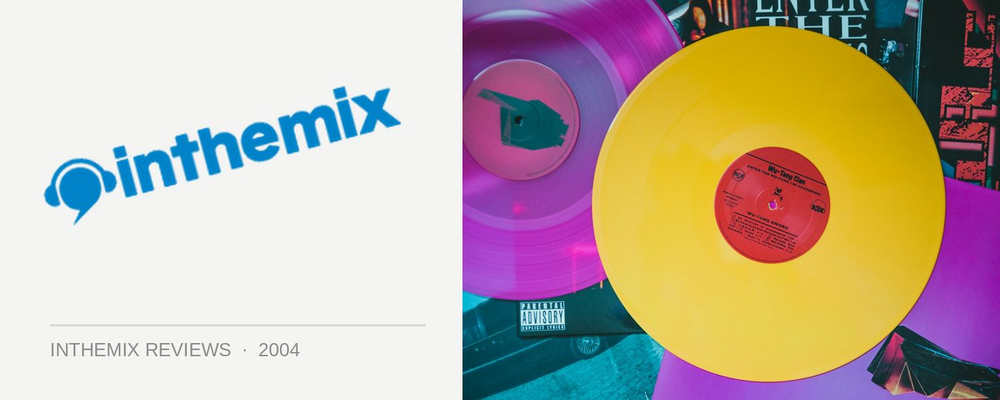

Phil Reynolds - Frantic Residents 04
(Nukleuz/Inertia)
As far as hard house goes, Phil Reynolds has been around for a while now. I can still remember his name being bandied about as the hard house scene was rising to prominence back in 2000, coming out to play at the early Frantic parties held at the skanky but much-loved Palladium venue. Phil Reynold’s sound has always been defined as hard house, very much informed by a dash of trance, and his latest CD marks the fourth excursion of the Frantic Residents series.
Malixx’s tune End starts things out on a minimal driving-techno note, offering the listener a hint of an uplifting trance line as the chorus rolls around. Showing further evidence of Reynold’s trance leanings, Rafferty & Kershaw’s Music and JoBabe’s Getting Hot both hold uplifting melodies laid over the top of a nice, solid pumping beat, with the latter in particular featuring a wicked euphoric chorus. Nick Rafferty & The Coalition’s U looks set to descend into cheese before redeeming itself with a hard, acidy chorus and a pumping hook that grabs you by the scruff of the neck and won’t let go.
Things really hot up with the Organ Donar’s Looking for Drugs - blasting hard house with a big-room sound. The next few tracks Pounding Beats, It’s a Dream and Rock n’ Roll are all co-productions by Phil Reynolds himself, and unfortunately are all pretty average. High-pitched and forgettable trance for the most part, it’s ironic that Phil’s own production work makes for the weakest cuts on the album.
But while the trance elements in these tunes are a little overwhelming, Phil redeems himself with some real hard house corkers in the latter part of the mix. Double Drop’s Imaginate is a bangin’ little number with a heavy acid-filled chorus, while Billy Bunter & Jon Doe’s Another Level winds it up like crazy in the breakdown before following through with a kicking hard beat. Matt Williams & Phil Reynold’s War on Drugs delivers fat, chunky, pulsing beats, hypnotic and throbbing and with an explosive chorus. As you can probably gather, the tone of these tunes is hard, hard, hard.
While some of Phil Reynolds’ selections on his latest Frantic Residents CD feature a little too much trance and not enough hard house for my liking, it’s still a great avenue to showcase his unique fusion of the two music styles. The second half in particular shows the producers pushing the hard house sounds a little further, featuring what any Frantic fan would want to hear – some chunky, tough and original hard house rhythms. Hypnotic, driving and relentless – all hail hard house.